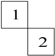
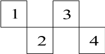

Parameter: multi_site_die_offsets
In case of multisite probing, the prober driver needs to know the relative die positions of all sites with respect to a reference site. This reference site is called primary die.
This parameter defines a list of X/Y pairs. Each pair represents the relative die position of a site with respect to the primary die (the relative position of the primary die to itself is 0,0). The list starts with site 1, then site 2, and so on. The direction of X and Y axis is as defined in the wafermap. The values for X and Y are die count positions (not distances). The following examples count X to the right and Y to the bottom.
Examples:
multi_site_die_offsets: [ [0 0] [1 1] ]
This defines a dual site probe setup where the probes of site 2 are in relative position 1,1 to the probes of site 1 (the primary die):

multi_site_die_offsets: [ [0 0] [1 1] [2 0] [3 1] ]
This defines a quad site probe setup with the following site probe layout:

If the parameter multi_site_die_offsets is not given, a single site probe is assumed.
Driver default: [ 0 0 ]
Changeable at run-time: no
Applicable for: probers
Example: multi_site_die_offsets: [ [0 0] [0 1] ]